По настоящему делу я могу показать следующее:
С Коганом Павлом Давыдовичем, по
просьбе которого я написал текст листовки
и которую я передал ее, я познакомился
в 1936 или 1937 г. у моей знакомой Мар-
галиты Львовны [нрзб], работавшей то-
гда в редакции журнала «Кузница». Он был
студентом литературного факультета
[нрзб] ин-та философии, истории
и [нрзб]. В беседах с ним, на квартире
у [нрзб] и себя, я выяснил, что
Коган, как и я недоволен массовыми
арестами советских граждан, проводив-
шимися тогда органами НКВД. Однажды
Коган мне сказал, что он знает еще
ряд молодых людей, которых [нрзб]
[нрзб] ранее не привлек и которые
хотели знать, на совершение государ-
ственных актов, [нрзб] однако [нрзб]
кто [нрзб] это совершил он
не говорил. Я ему заявил, что это связано
[нрзб] с клеветою и бессмысленно,
что террор ничего не улучшит, и что
единственный путь - это высказать свое
мнение массам. Тогда Коган предложил
мне [нрзб] изложить письменно свою [нрзб]
точку зрения, что я и сделал. Этим
[нрзб] привозил к моему дому. Я начал
эту «листовку», будучи глубоко убежденным,
что я умею изложить это так [нрзб]
[нрзб], сейчас, я вижу, что в кем
[нрзб]
Корец
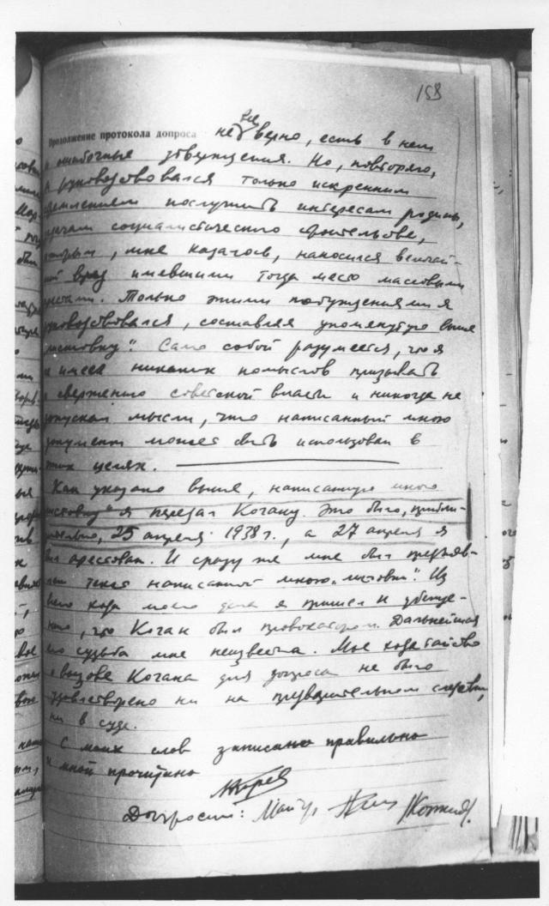
[на полях] 158
Продолжение протокола допроса
[нрзб] не уверен, есть в кем
[нрзб] возбуждения. Не, повторно,
я руководствовался только искренним
[нрзб] послужить интересам родины,
[нрзб] соглас[нрзб] [нрзб],
[нрзб], мне казалось, наносился вели-
[нрзб] вред имевшими тогда место массовыми
арестами. Именно этими побуждениями я
руководствовался, составляя упомянутую выше
листовку. Само собой разумеется, что я
в числе никаких контр[нрзб] призывов к
свержению советской власти и никогда не
допускал мысли, что написанный мною
документ может быть использован в
этих целях.
Как указано выше, написанную мною
листовку я передал Когану. Это было, при-
[нрзб], 25 апреля 1938 г., а 27 апреля я
был арестован. И сразу же мне был предъяв-
лен текст написанной мною листовки. Из
[нрзб] как могло быть я пришел к убежде-
нию, что Коган был провокатором. Дальнейшие
его [нрзб] мне неизвестны. Мне еще [нрзб]
о вызове Когана для допроса не было
[нрзб] ни на предварительном следст-
вии в суде.
С моих слов записано правильно
и мною прочитано
Корец
Допросили: [нрзб], [нрзб] /Коркин/
стр.159 Протокол допроса от 27.06.56 оборот стр. 160
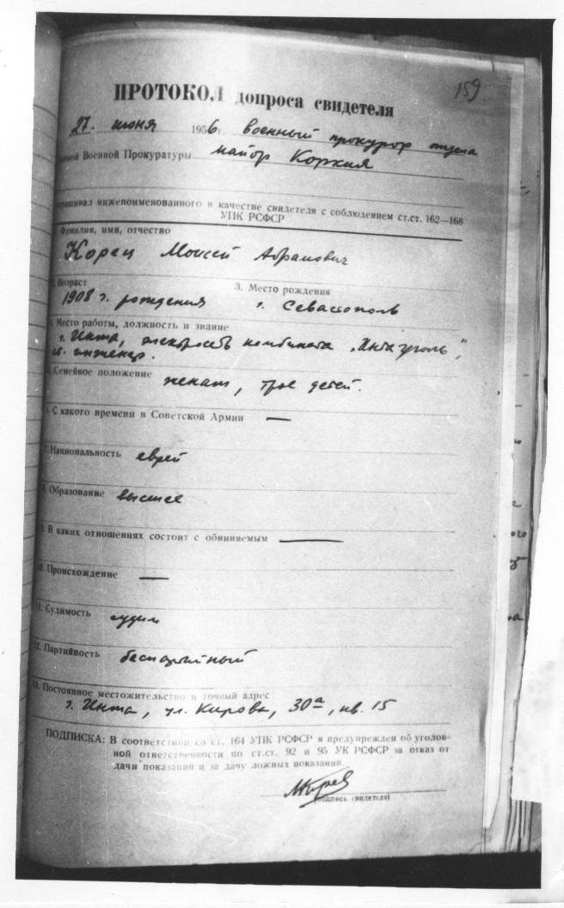
ПРОТОКОЛ допроса свидетеля
[на полях] 159
27 июня 1956 г. военный прокурор [нрзб]
майор Коркин
[нрзб] Военной Прокуратуры
допросил нижепоименованного в качестве свидетеля с соблюдением ст.ст. 162-168
УПК РСФСР
Фамилия, имя, отчество
Корец Моисей Абрамович
Возраст
1908 г. рождения
Место рождения
г. Севастополь
Место работы, должность и звание
г. Инта, электр[нрзб] комбината „Интуголь",
ст. инженер.
Семейное положение
женат, трое детей.
С какого времени в Советской Армии
—
Национальность
еврей
Образование
высшее
В каких отношениях состоит с обвиняемым
—
Происхождение
—
Судимость
судим
Партийность
беспартийный
Постоянное местожительство и точный адрес
г. Инта, ул. Кирова, 30а, кв. 15
ПОДПИСКА: В соответствии со ст. 164 УПК РСФСР я предупрежден об уголов-
ной ответственности по ст.ст. 92 и 95 УК РСФСР за отказ от
дачи показаний и за дачу ложных показаний.
Корец
(подпись свидетеля)
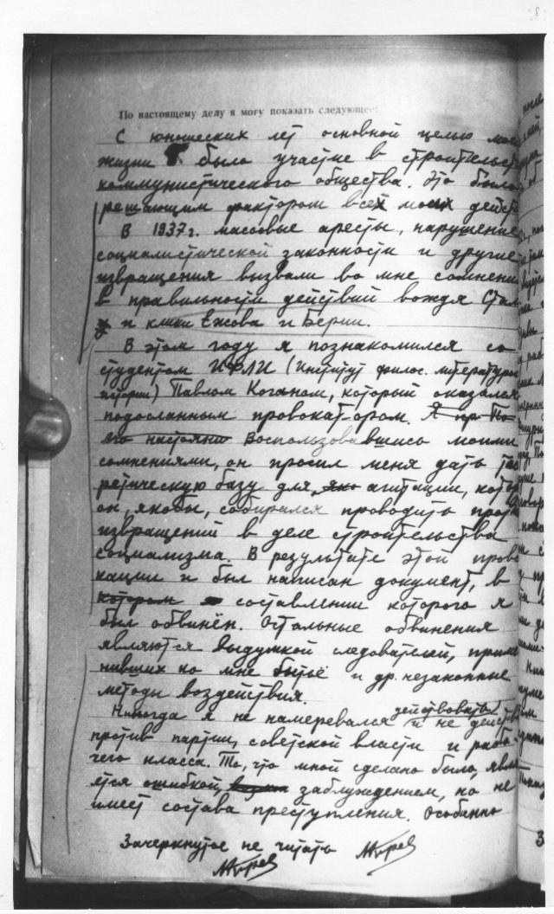
По настоящему делу я могу показать следующее:
С юношеских лет основной целью моей
жизни было участие в строительстве
коммунистического общества. Но более
решающим фактором всех моих действий
В 1937 г. массовые аресты, нарушение
социалистической законности и другие
извращения вызвали во мне сомнения
в правильности действий вождя Ста-
лина и клики Ежова и Берия.
В этом году я познакомился со
студентом ИФЛИ (институт философ. литературы
[нрзб]) Павлом Коганом, который оказался
подосланным провокатором. Я проявил
к нему некоторую [нрзб] моими
сомнениями, он просил меня дать [нрзб]
фактическую базу для этих сомнений, котор
ые, якобы, собирался проводить против
извращений в деле строительства
социализма. В результате этой прово-
кации и был написан документ, в
котором [нрзб] социализм которого я
был обвинен. Остальные обвинения
являются выдумкой следователей, приме-
нявших ко мне битье и др. незаконные
методы воздействия.
Никогда я не намеревался [нрзб] действовать
против партии, советской власти и рабо-
чего класса. То, что мной сделано было, явл
ется ошибкой, [нрзб] заблуждением, но не
имеет состава преступления. Особенно
Зачеркнутое не читать Корец
Корец
[нрзб]
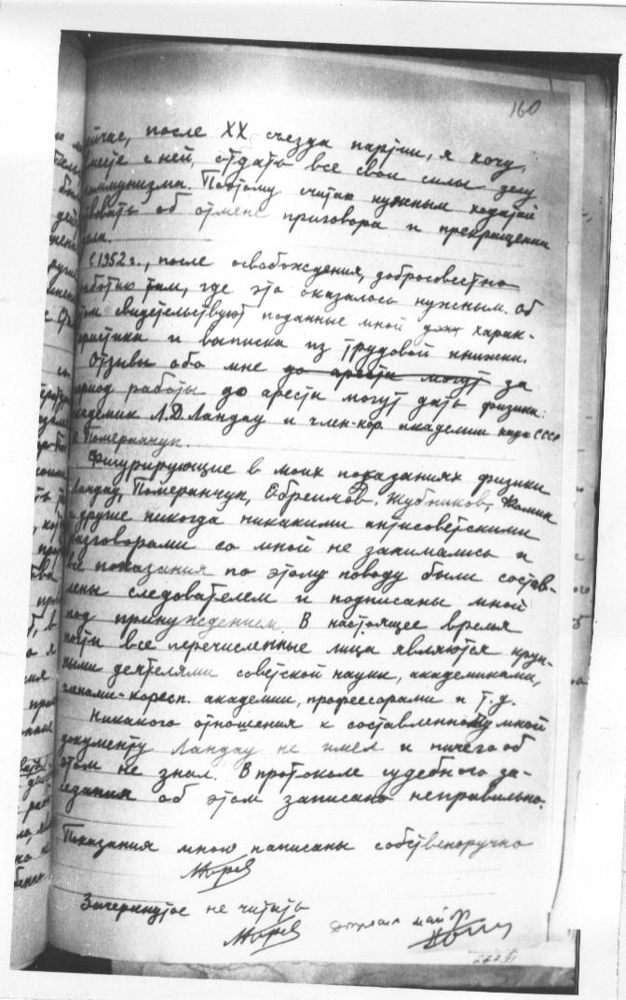
[на полях] 160
[нрзб], после XX съезда партии, я хочу
[нрзб] с ней, отдать все свои силы делу
коммунизма. Поэтому пишу судебным властям
просьбу об отмене приговора и прекращении
[нрзб].
С 1952 г., после освобождения, добросовестно
работаю там, где это оказалось нужным. Об
этом свидетельствуют поданные мной [нрзб] харак-
теристика и выписки из трудовой книжки.
Отзывы обо мне до ареста могут дать физики
академик Л.Д. Ландау и член-кор. академии наук [нрзб]
Тамм [нрзб].
Фигурирующие в моих показаниях физики
Ландау, Тамм, [нрзб], Шубников, [нрзб]
и другие никогда никакими антисоветскими
разговорами со мной не занимались и
их показания по этому поводу были сост
авлены следователем и подписаны мной
под принуждением. В настоящее время
почти все перечисленные лица являются круп-
ными деятелями советской науки, академиками,
членами-корр. академии, профессорами и т.д.
Никакого отношения к составлению мной
документа Ландау не имел и ничего об
этом не знал. В протоколе судебного за-
седания об этом записано неправильно.
Показания мною написаны собственноручно
Корец
Зачеркнутое не читать
Корец
[нрзб] /Коркин/
стр.161 Харктеристика на старшршего инженера электосети Интауголь
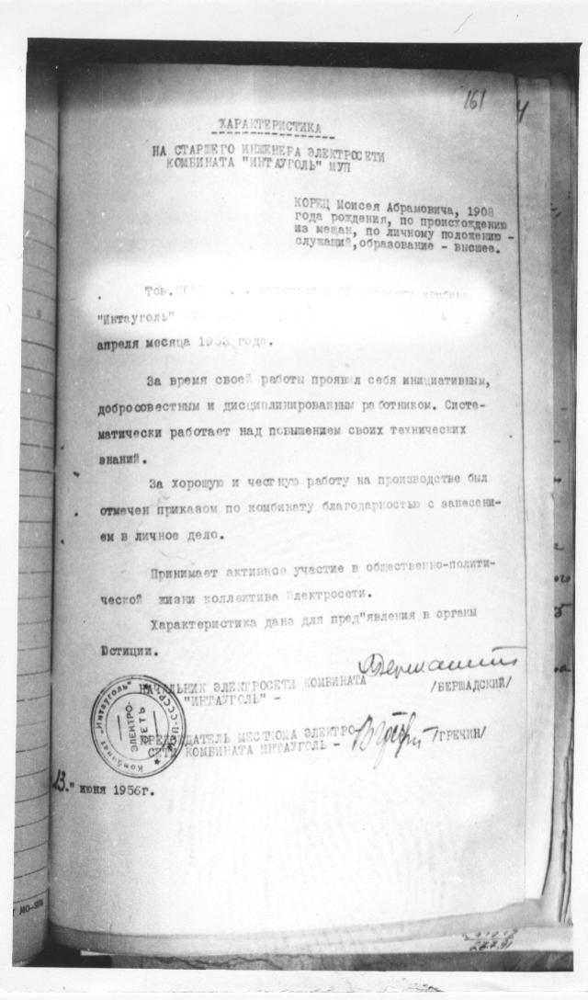
[на полях] 161
ХАРАКТЕРИСТИКА
НА СТАРШЕГО ИНЖЕНЕРА ЭЛЕКТРОСЕТИ
КОМБИНАТА „ИНТАУГОЛЬ" МУП
КОРЕЦ Моисей Абрамович, 1908
года рождения, по происхождению
из мещан, по личному положению -
служащий, образование - высшее.
Тов. Корец [нрзб] комбината
„Интауголь"
апреля месяца 1956 года.
За время своей работы проявил себя инициативным,
добросовестным и дисциплинированным работником. Систе-
матически работает над повышением своих технических
знаний.
За хорошую и честную работу на производстве был
отмечен приказом по комбинату благодарностью с занесени-
ем в личное дело.
Принимает активное участие в общественно-полити-
ческой жизни коллектива электросети.
Характеристика дана для предъявления в органы
Юстиции.
[нрзб] /ВЕРШАДСКИЙ/
[печать] [нрзб] ЭЛЕКТРОСЕТИ КОМБИНАТА „ИНТАУГОЛЬ"
[нрзб] /ГРЕЧИН/
„13" июня 1956 г.
стр. 162 Выписка из трудовой книжки
[на полях] 161
ХАРАКТЕРИСТИКА
НА СТАРШЕГО ИНЖЕНЕРА ЭЛЕКТРОСЕТИ
КОМБИНАТА „ИНТАУГОЛЬ" МУП
КОРЕЦ Моисей Абрамович, 1908
года рождения, по происхождению
из мещан, по личному положению -
служащий, образование - высшее.
Тов. Корец [нрзб] комбината
„Интауголь"
апреля месяца 1956 года.
За время своей работы проявил себя инициативным,
добросовестным и дисциплинированным работником. Систе-
матически работает над повышением своих технических
знаний.
За хорошую и честную работу на производстве был
отмечен приказом по комбинату благодарностью с занесени-
ем в личное дело.
Принимает активное участие в общественно-полити-
ческой жизни коллектива электросети.
Характеристика дана для предъявления в органы
Юстиции.
[нрзб] /ВЕРШАДСКИЙ/
[печать] [нрзб] ЭЛЕКТРОСЕТИ КОМБИНАТА „ИНТАУГОЛЬ"
[нрзб] /ГРЕЧИН/
„13" июня 1956 г.
Письмо Ландау в Центальную военную прокуратутру
Чтение снимка, местами неуверенное. Сверьте со снимком.
[на полях] [нрзб]
[на полях] 54.48
[на полях] [нрзб]
[печать] [нрзб]
[на полях] К
В ГЛАВНУЮ ВОЕННУЮ ПРОКУРАТУРУ
Я был близко знаком с Моисеем Абрамовичем КОРЕЦОМ в
течение 1934-38 г.г.
В 1935-36 г. он работал в Укр. Физико-Техническом
институте непосредственно под моим руководством. Краткость
[нрзб] не позволила ему закончить начатые им работы, но
он успел проявить себя как способный молодой физик-теоре-
тик.
С общественно-политической стороны М.А. Корец был
известен мне в то время как человек, горячо преданный делу
[нрзб] способствовать делу развития науки в СССР он
считал одной из основных задач своей жизни.
Л. Ландау
Академик
Л.Д. Ландау
21 мая 1956 г.
[на полях] [нрзб]
[на полях] Корец
[на полях] [нрзб]
стр. 165 Обзорная справка по обвинению Ландау стр. 166
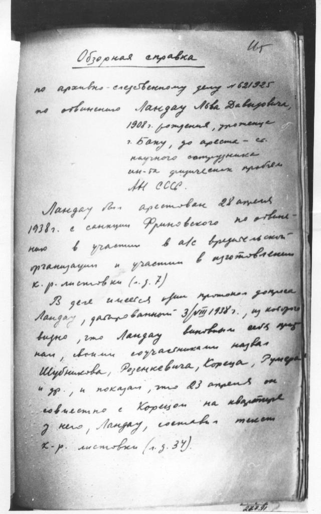
Обзорная справка
[на полях] 165
по архивно-следственному делу № 621325
по обвинению Ландау Льва Давидовича,
1908 г. рождения, уроженца
г. Баку, до ареста - ст.
научного сотрудника
ин-та физических проблем
АН СССР.
Ландау Л.Д. арестован 28 апреля
1938 г. с санкции Фриновского по обви-
нению в участии в а/с вредительской
организации и участии в изготовлении
к.р. листовки (л.д. 7)
В деле имеется один протокол допроса
Ландау, датированный 3/VIII 1938 г., из которого
видно, что Ландау виновным себя приз-
нал, своими соучастниками назвал
Шубникова, Розенкевича, Кореца, Румера
и др., и показал, что 23 апреля он
совместно с Корецом на квартире
у него, Ландау, составил текст
к.р. листовки (л.д. 34).
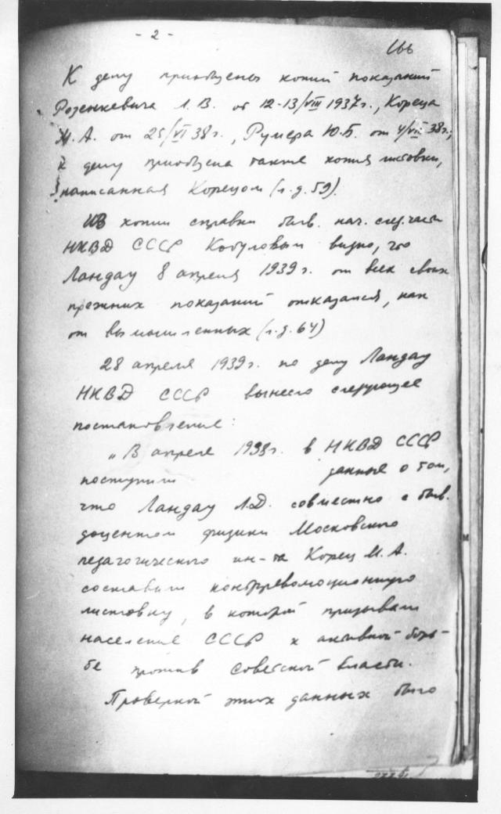
- 2 -
[на полях] 166
К делу приобщены копии показаний
Розенкевича Л.В. от 12-13/VII 1937 г., Кореца
М.А. от 25/V 38 г., Румера Ю.Б. от [нрзб] 38 г.
К делу приобщена также копия листовки,
написанная Корецом (л.д. 53).
Из копии справки Зам. нар. [нрзб]
НКВД СССР Кобулова видно, что
Ландау 8 апреля 1939 г. от всех своих
прежних показаний отказался, как
от вынужденных (л.д. 61)
28 апреля 1939 г. по делу Ландау
НКВД СССР вынесено следующее
постановление:
„В апреле 1938 г. в НКВД СССР
поступили данные о том,
что Ландау Л.Д. совместно с [нрзб]
[нрзб] физики Московского
педагогического ин-та Корец М.А.
составили контрреволюционную
листовку, в которой призывали
население СССР к активной борь-
бе против Советской власти.
Проверка этих данных [нрзб]
стр. 167 стр.169
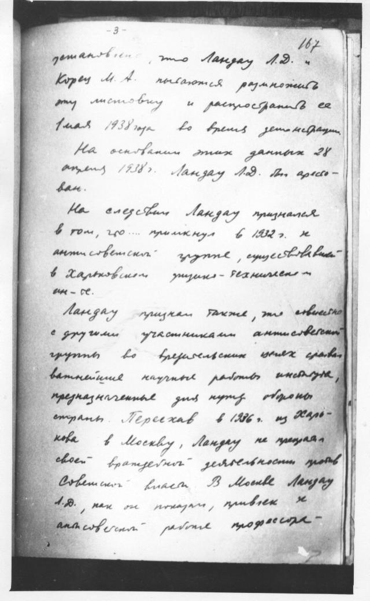
- 3 -
[на полях] 167
установлено, что Ландау Л.Д. и
Корец М.А. пытаются размножить
эту листовку и распространить ее
1 мая 1938 года во время демонстрации.
На основании этих данных 28
апреля 1938 г. Ландау Л.Д. был аресто-
ван.
На следствии Ландау признался
в том, что примкнул в 1932 г. к
антисоветской группе, существовав-
шей в Харьковском физико-техничес-
ком ин-те.
Ландау признал также, что совместно
с другими участниками антисоветской
группы во вредительских целях срывал
важнейшие научные работы института,
предназначенные для нужд обороны
страны. Переехав в 1936 г. из Харь-
кова в Москву, Ландау не прекратил
своей враждебной деятельности против
Советской власти. В Москве Ландау
Л.Д., как он показал, привлек к
антисоветской работе прогрессив-
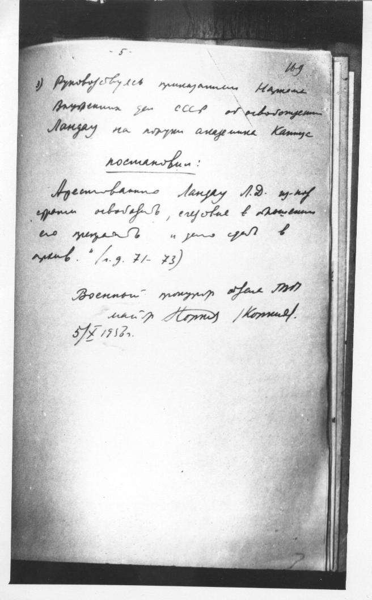
- 5 -
[на полях] 169
3) Руководствуясь приказанием Наркома
Внутренних дел СССР освободить
Ландау на поруки академика Капицы
постановили:
Арестованного Ландау Л.Д. из под
стражи освободить, сдав его на поруки
[нрзб] академику Капице „с тем чтобы в
дальн." (л.д. 71-73)
Военный прокурор отдела ГВП
майор [нрзб] /Коркин/
3/X 1958 г.
стр. 171 Справка
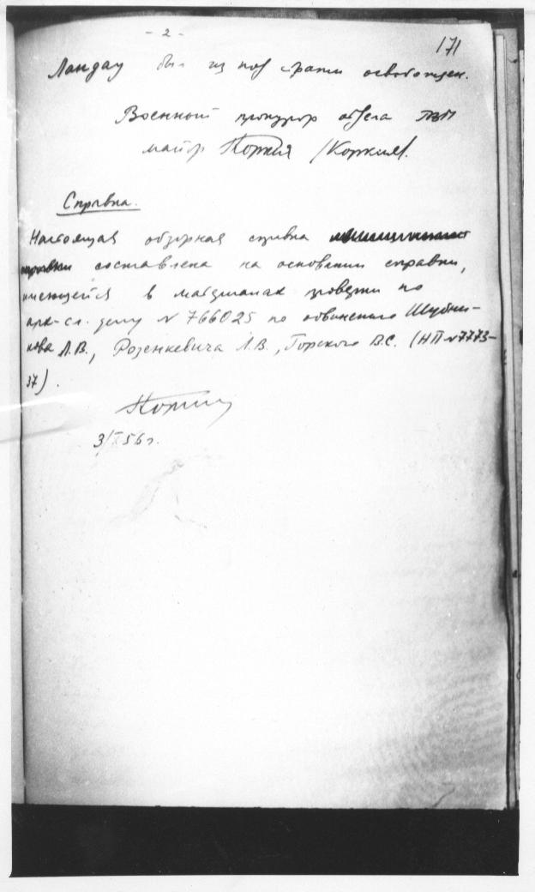
- 2 -
[на полях] 171
Ландау Л.Д. из под стражи освобожден.
Военный прокурор отдела ГВП
майор [нрзб] /Коркин/.
Справка.
Настоящая обзорная справка [нрзб]
составлена на основании справки,
имеющейся в материалах проверки по
арх-сл. делу № 766025 по обвинению Шубни-
кова Л.В., Розенкевича Л.В., Горского В.С. (НТ № [нрзб]
37).
[нрзб]
3/X 56 г.
стр. 172 Справка о пересмотре обвинения Шубникова и других. Письмо Ландау стр. 173 стр. 174
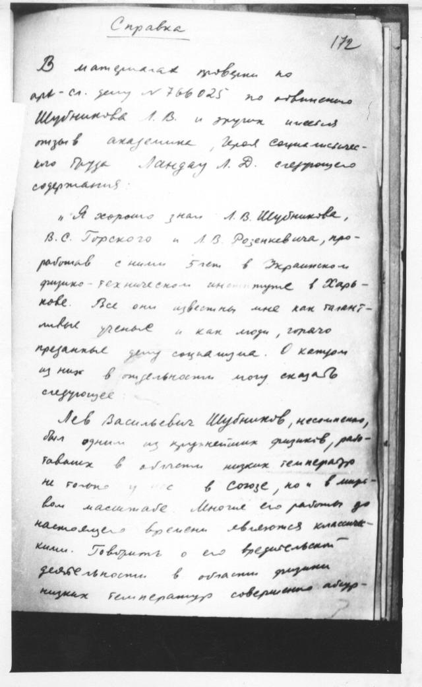
Справка
[на полях] 172
В материалах проверки по
арх-сл. делу № 766025 по обвинению
Шубникова Л.В. и других имеется
отзыв академика, Героя Социалистичес-
кого Труда Ландау Л.Д. следующего
содержания:
„Я хорошо знал Л.В. Шубникова,
В.С. Горского и Л.В. Розенкевича, про-
работав с ними 3 лет в Украинском
физико-техническом институте в Харь-
кове. Все они известны мне как талант-
ливые ученые и как люди, горячо
преданные делу социализма. О каждом
из них в отдельности могу сказать
следующее
Лев Васильевич Шубников, несомненно,
был одним из крупнейших физиков, рабо-
тавших в области низких температур
не только у нас в Союзе, но и в миро-
вом масштабе. Многие его работы до
настоящего времени являются классичес-
кими. Говорить о его вредительской
деятельности в области физики
низких температур совершенно абсур-
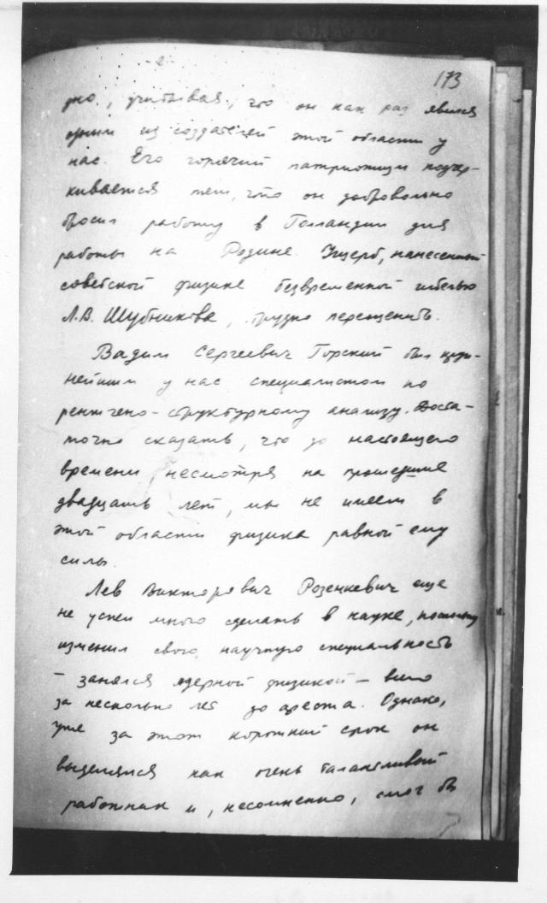
- 2 -
[на полях] 173
дно, учитывая, что он как раз явился
одним из создателей этой области у
нас. Его уровень напряжения науч-
кивался тем, что он задумывал
свои работу в Голландии для
работы на Родине. Смерть, нанесенная
советской физике безвременной гибелью
Л.В. Шубникова, трудно переоценить.
Вадим Сергеевич Горский был круп-
нейшим у нас специалистом по
рентгено-структурному анализу. Вос-
можно сказать, что до настоящего
времени, несмотря на прошедшие
двадцать лет, мы не имеем в
этой области физики равной ему
силы.
Лев Викторович Розенкевич еще
не успел много сделать в науке, потому
что изменил свою научную специальность
- занялся ядерной физикой - всего
за несколько лет до ареста. Однако,
уже за этот короткий срок он
выдвинулся как очень талантливый
работник и, несомненно, имел в
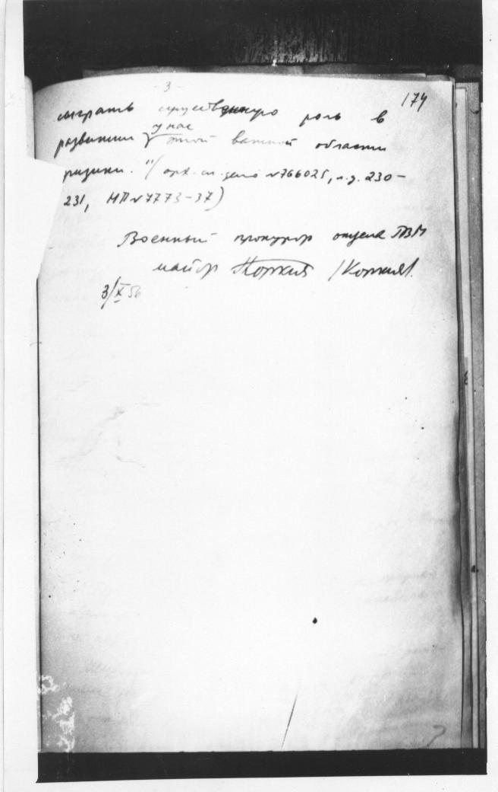
- 3 -
[на полях] 174
[нрзб] существовало роль в
развитии у нас этой важной области
физики. (арх. сл. дело № 766025, л.д. 230-
231, НТ № [нрзб]-37)
Военный прокурор отдела ГВП
майор [нрзб] /Коркин/
3/X 56
стр. 175 Обзорная справка по обвинению Шубникова, Розенкевича, Горского
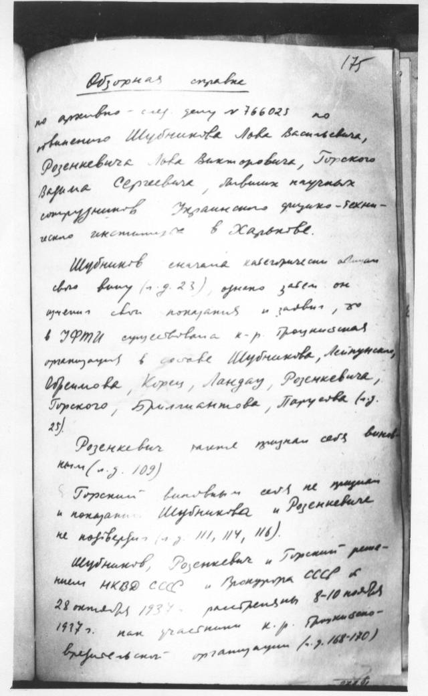
Обзорная справка
[на полях] 175
по архивно-след. делу № 766025 по
обвинению Шубникова Льва Васильевича,
Розенкевича Льва Викторовича, Горского
Вадима Сергеевича, бывших научных
сотрудников Украинского физико-техни-
ческого института в Харькове.
Шубников сначала категорически отрицал
свою вину (л.д. 23), однако затем он
уточнил свои показания и заявил, что
в УФТИ существовала к-р троцкистская
организация в составе Шубникова, Лейпунского,
[нрзб], Кореца, Ландау, Розенкевича,
Горского, Бриллиантова, [нрзб] (л.д.
25)
Розенкевич также признал себя винов-
ным (л.д. 109)
Горский виновным себя не признал
и показания Шубникова и Розенкевича
не подтвердил (л.д. 111, 114, 116).
Шубников, Розенкевич и Горский реше-
нием НКВД СССР и Прокурора СССР от
28 октября 1937 г. расстреляны 8-10 ноября
1937 г. как участники к.р. троцкистско-
вредительской организации (л.д. 168-180)
По настоящему делу я могу показать следующее:
Массовые репрессии советских людей, которые
проводились в нашей стране в 1937 году и которые
я считал незаконными, несоответствующими делу
дела социализма, вызвали во мне чувство боли
за судьбу революции в нашей стране, чувство возму-
щения этих репрессий. Я верил в наших лет был
предан делу социализма и в меру моих сил и
возможностей боролся за социализм. И когда я
видел, что арестовывают среди многих советских
людей, причем не только людей стоящих на высоких
постах, но и простых людей, я пришел к выводу,
что таким путем наносится вред революции,
делу социализма в нашей стране, действуя над безза-
кониями. Конкретных фактов этих массовых
репрессий в то время в Интe я знал очень много,
от этих ведь и много говорили, и сам это видел,
хотя никого из моих родственников или близких
арестован тогда не был. При этом я хочу подчеркнуть,
что я не верил в правильность, в обоснованность
этих репрессий, т.к. не мог знать наверняка, действи-
тельно ли, действительно ли арестовывают того или иного
человека, но я считал, что такие массовые
репрессии ни чем не оправдываются, они так не будут,
более того как я считал, они только вредят делу
нашей страны.
И вот в результате моих переживаний, в результате
этого [нрзб] и бесед [нрзб] массовых
репрессий я и написал в 1937 году ту злополучную
листовку, за которую меня судили в 1939 году.
Написание этой листовки связано с неким Коганом
Корец
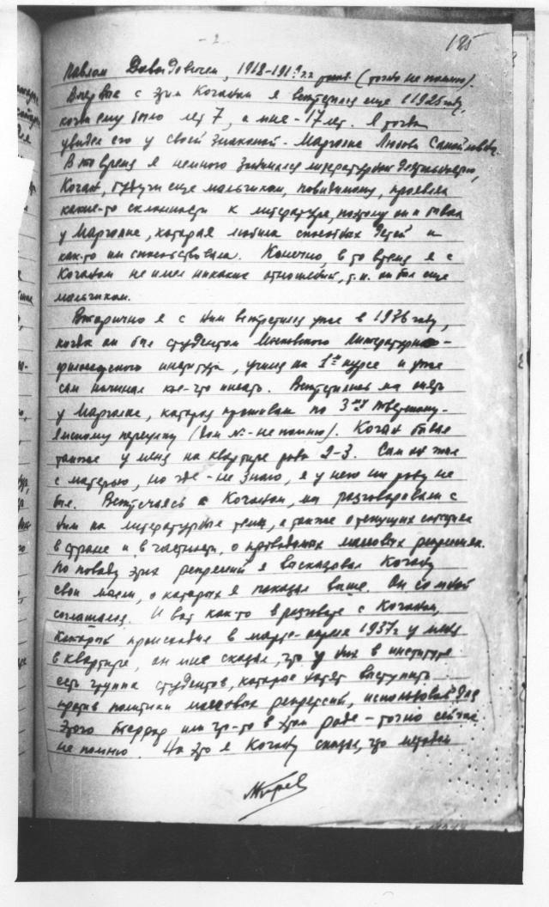
- 2 -
[на полях] 185
Павлом Давыдовичем, 1918-1942 гг. (погиб на войне).
Впервые с этим Коганом я встретился еще в 1935 году,
когда ему было лет 17, а мне - 27 лет. Я просто
увидел его у своей знакомой - Маргалиты Львовны Саминской.
В то время я немного занимался литературной деятельностью,
Коган, будучи еще мальчиком, новичком, пробовал
каким-то образом к литературе, поэтому мы с ним
у Маргалиты, которая любила собирать людей и
как-то их знакомить. Конечно в то время я с
Коганом не имел никаких отношений, т.к. он был еще
мальчиком.
Вторично я с ним встретился уже в 1936 году,
когда он был студентом Литературного института -
[нрзб] института, учился на 1-м курсе и уже
сам начинал кое что писать. Встретились мы опять
у Маргалиты, которая проживала на 3-й [нрзб]
[нрзб] (дом № не помню). Коган тогда
учился у нас на квартире раза 2-3. Сам он тоже
с [нрзб], но где - не знаю, и у него мы тоже не
были. Встречался с Коганом, мы разговаривали с
ним на литературные темы, о разных текущих событиях
в стране и в частности, о проводимых массовых репрессиях.
По поводу этих репрессий я высказывал Когану
свои мысли, о которых я показал выше. Он со мной
соглашался. И вот как-то в разговоре с Коганом,
который происходил в марте-апреле 1937 г. у меня
в квартире, он мне сказал, что у них в институте
есть группа студентов, которая тоже возмущена
этими массовыми репрессиями, [нрзб]
этого террора или что-то в этом роде - точно сейчас
не помню. На это я Когану сказал, что [нрзб]
Корец
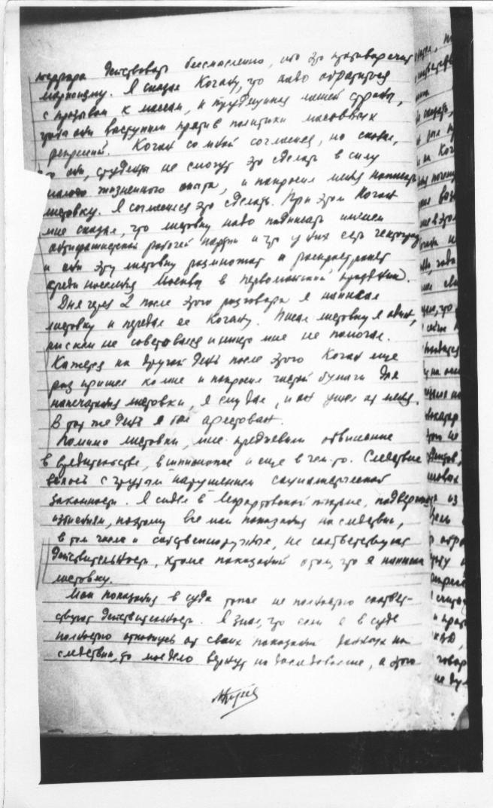
[нрзб] безусловно, что это [нрзб]
неправильно. Я сказал Когану, что надо обратиться
с протестом к массам, к трудящимся нашей страны,
чтобы они возмутили правящие [нрзб] массовых
репрессий. Коган со мной согласился, но сказал,
что они, студенты не смогут это сделать в силу
своего маленького опыта, и попросил меня написать
листовку. Я согласился это сделать. При этом Коган
мне сказал, что листовку надо написать именем
абстрактного рабочего партии и что у них есть резолюция
и они эту листовку размножат и распространят
среди населения Москвы в подпольных типографиях.
Дня через 2 после этого разговора я написал
листовку и передал ее Когану. Писал листовку я один,
ни с кем не советовался и никто мне не помогал.
Кажется на другой день после этого Коган еще
раз пришел ко мне и попросил текст [нрзб] для
напечатания листовки, я ему дал, и вот уже на ней,
в тот же день я был арестован.
Помимо листовки, мне предъявили обвинение
в вредительстве, вымышленное и еще в том, что. Следствие
вело с целью нарушения социалистической
законности. Я сидел в Лефортовской тюрьме, подвергался из
биениям, потому что мне показывали на следствии,
в том числе и следователь [нрзб], не свидетельствующий
[нрзб], кроме показаний о том, что я написал
листовку.
Мои показания в суде тоже не полностью соответ-
ствуют действительности. Я знал, что если я в суде
полностью откажусь от своих показаний данных на
следствии, то мне это будет на пользу, а это
Корец
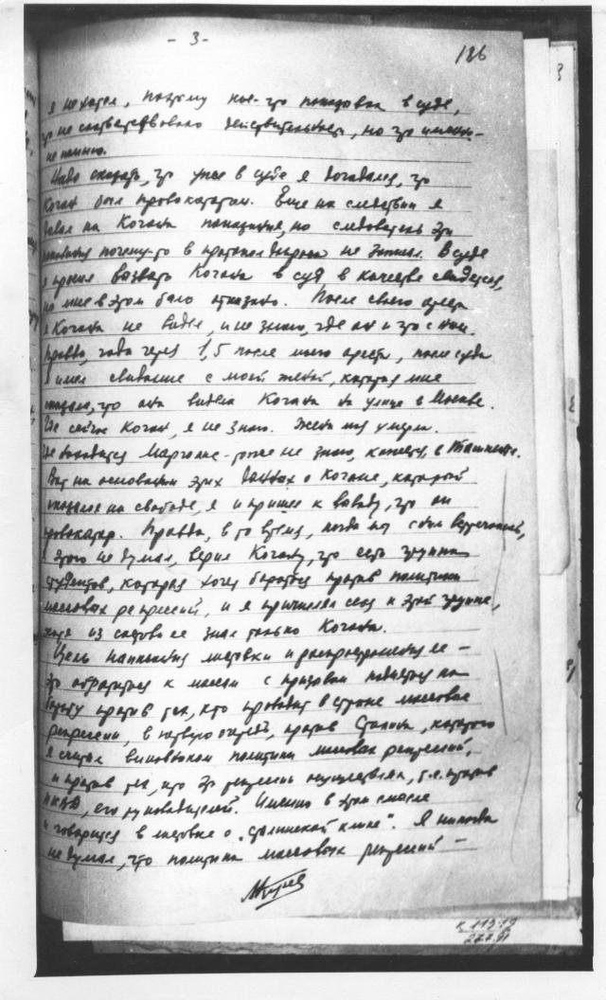
- 3 -
[на полях] 186
я не хотел, потому что как-то надеялся в суде,
что не соответствует действительности, но это [нрзб]
не помню.
Надо сказать, что уже в суде я сознался, что
Коган был провокатором. Еще на следствии я
сказал на Когана показания, но следователь это
[нрзб] почему-то в протокол допроса не записал. Вопрос
о вызове Когана в суд в качестве свидетеля,
ко мне в том дело отказано. После этого суда
Когана не видел и не знаю где он и что с ним.
Прошло года через 15 после моего ареста, когда уже
я жил [нрзб] с моей женой, которая мне
сказала, что она видела Когана на улице в Москве.
Где сейчас Коган, я не знаю. Здесь мой [нрзб].
По рассказам Маргалиты - тоже не знаю, которая с [нрзб].
Еще на основании этих бесед о Когане, который
[нрзб] на следствии и я пришел к выводу, что он
провокатор. Кроме, в то время, когда мы сами возмущались
этим не думал, кроме Когана, что его [нрзб]
[нрзб], которые хотя бороться против массовых
[нрзб] репрессий, и я пришел себ и этот [нрзб],
через [нрзб] он знал только Когана.
Цель написания листовки и распространения ее -
это обратиться к массам с призывом протеста по
поводу террора тех, кто боролся в стране массовых
репрессий, в первую очередь, против Сталина, которого
я считал виновником массовых репрессий,
и против тех, кто эти репрессии осуществлял, т.е. против
НКВД, его руководителей. Именно в этом смысле
я повторяюсь в листовке о „сталинской клике". Я никогда
не думал, что политика массовых репрессий -
Корец
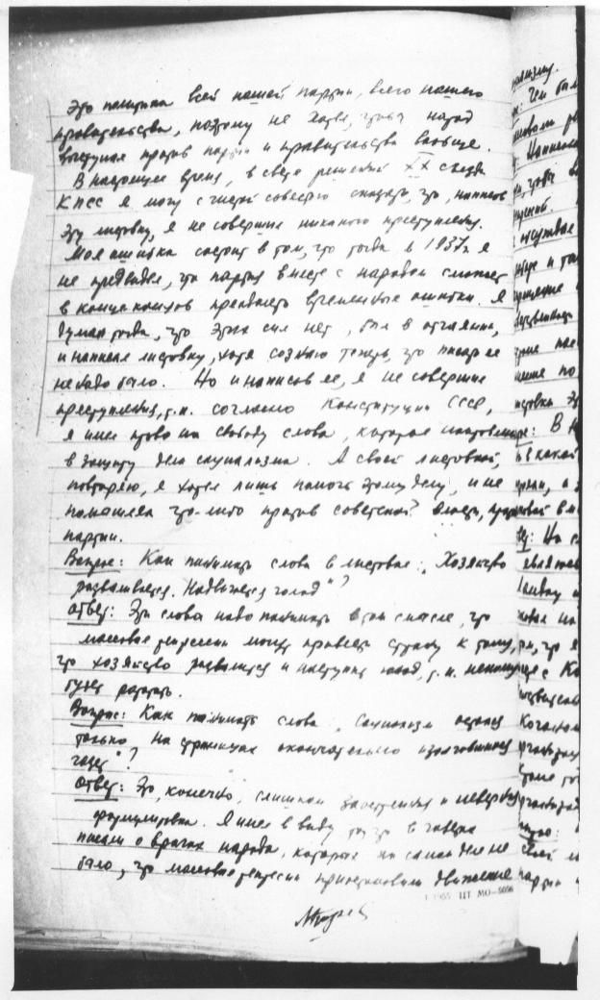
Это нарушает весь наш народ, всего нашего
правительства, поэтому не даст, [нрзб] народ
[нрзб] против партии и правительства вообще.
В настоящее время, в свете решений XX съезда
КПСС я могу с чистой совестью сказать, что, написав
эту листовку, я не совершил никакого преступления.
Моя ошибка состоит в том, что тогда в 1937 г. я
не предвидел, что народ вместе с партией сметет
в конце концов временно временные [нрзб] я
думал тогда, что этого еще нет, как в организации,
и написал листовку, хотя сознаю теперь что тогда ее
писать было. Но и написав ее я не совершил
преступления, т.к. согласно Конституции СССР,
я имел право на свободу слова, которая заключается: В
в защиту дела социализма. В своей листовке, в какой
[нрзб], я хотел лишь помочь этому делу, и не думал, а
наносил что-либо против советской власти, против [нрзб]
партии.
Вопрос: Как понимаешь слова в листовке: „Хозяйство страны
разваливается. Надвигается голод"?
Ответ: Эти слова надо понимать в том смысле, что
массовые репрессии могут привести страну к тому, что
что хозяйство развалится и наступит голод, т.к. [нрзб]
[нрзб] народ.
Вопрос: Как понимаешь слова „Сталинская [нрзб] Когана
[нрзб] на принципах экономического [нрзб]
[нрзб]"?
Ответ: Это, конечно, [нрзб] [нрзб] и [нрзб]
[нрзб]. Я имел в виду то, что в те годы
[нрзб] и враги народа, которых мы сами [нрзб]
1930, что массовые репрессии [нрзб] [нрзб] народ
Корец
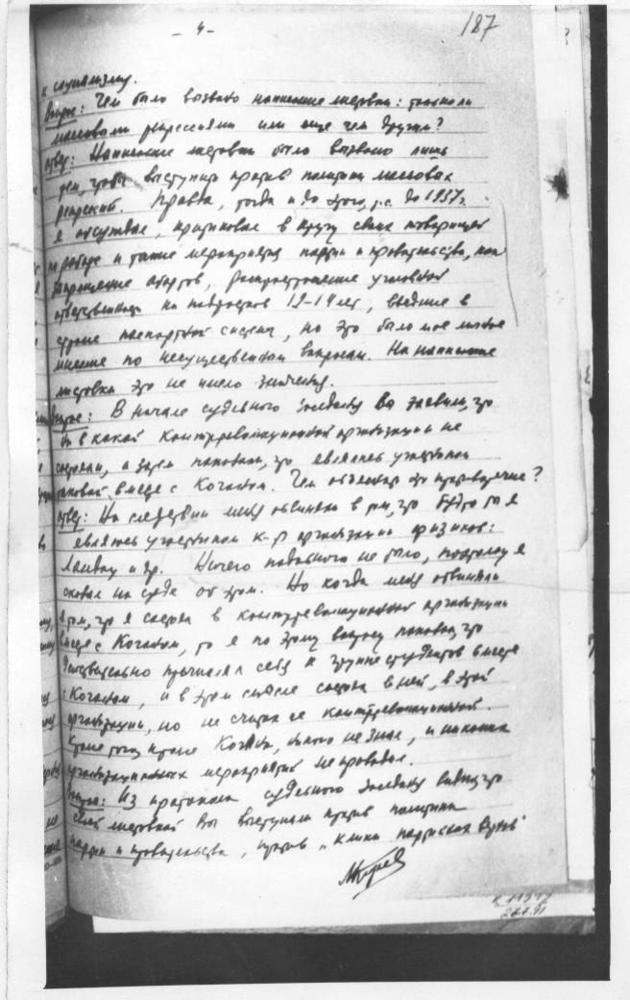
- 4 -
[на полях] 187
и социализма.
Вопрос: Чем было вызвано написание листовки: фактами
массовых репрессий или еще чем другим?
Ответ: Написание листовки было вызвано лишь
тем, чтобы возмутить правящие [нрзб] массовых
репрессий. Кроме, тогда я во [нрзб], т.е. в 1937 г.
я осуждал, проводимые в ту пору [нрзб]
[нрзб] и также мероприятия партии и правительства, как
разрешение абортов, [нрзб] уголовной
ответственности за [нрзб] 12-14 лет, введение в
стране паспортной системы, но это было не главное
мнение но [нрзб] вопросом. На написание
листовки это не имело значения.
Вопрос: В начале судебного следствия вы заявили, что
вы в какой контрреволюционной организации не
состояли, а затем показали, что являлись участником
[нрзб] вместе с Коганом. Чем объяснить это противоречие?
Ответ: На следствии мне было сказано в том, что будто бы я
являюсь участником к-р организации в составе:
Ландау и др. Ничего подобного не было, поэтому я
отказался на суде от этого. Но когда мне объявили
[нрзб], что я состоял в контрреволюционной организации
вместе с Коганом, то я на этом вопрос показал, что
[нрзб] признал себя в [нрзб] вместе
с Коганом, и в этом смысле сказал в суде, в этом
[нрзб], но не считал ее контрреволюционной.
Кроме того кроме Когана, никто не знал, и никаких
[нрзб] мероприятий не проводил.
Вопрос: Из протокола судебного следствия видно, что
ваша листовка была [нрзб] против [нрзб]
партии и правительства, против „клики [нрзб] Бухарина"
Корец
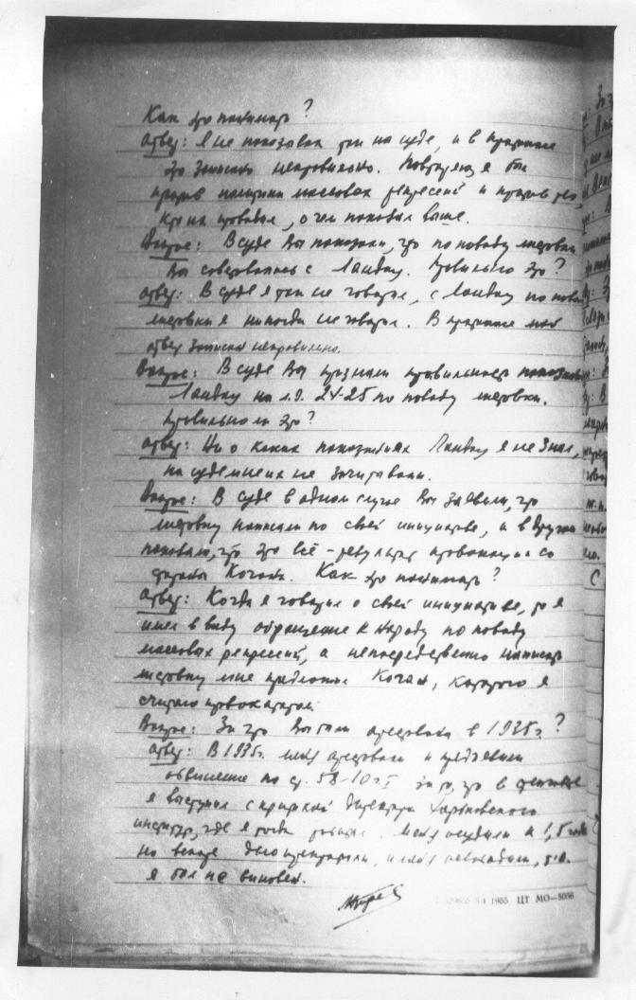
Как это понимать?
Ответ: Я не призывал ни на суде, а в [нрзб]
это [нрзб] [нрзб]. Повторюсь я [нрзб]
против [нрзб] массовых репрессий и против тех
кто их проводил, о чем показал выше.
Вопрос: В суде вы показали, что по поводу листовки
вы советовались с Ландау. [нрзб] это?
Ответ: В суде я это не говорил, с Ландау по поводу
листовки я никогда не говорил. В [нрзб] мне
[нрзб]
Ответ: [нрзб]
Вопрос: В суде вы будучи [нрзб] показали:
Ландау на л.д. 24-25 по поводу листовки.
[нрзб] это?
Ответ: Ни о каких показаниях Ландау я не знал,
на следствии не допрашивал.
Вопрос: В суде в одном случае вы заявили, что
листовку написали по своей инициативе, а в другом
показали, что это [нрзб] организация со
[нрзб] Когана. Как это понимать?
Ответ: Когда я говорил о своей инициативе, то я
имел в виду содержание и текст, но повод
массовых репрессий, а непосредственным [нрзб]
листовки мне предложил Коган, которого я
считал провокатором.
Вопрос: За что вы были арестованы в 1935?
Ответ: В 1935 г. был арестован и предъявлено
обвинение по ст. 58-10 [нрзб] в том, что в [нрзб]
я [нрзб] [нрзб] [нрзб] [нрзб]
института, где я тогда работал. [нрзб] [нрзб] в г. [нрзб]
по [нрзб] [нрзб], и был освобожден, т.к.
я дел не [нрзб].
Корец
Текст снят со снимков дела. Неразобранные слова отмечены [нрзб]. Там, где страница слишком бледная, оставлен только снимок.